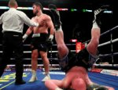

Аллен завершил карьеру:
«Всем привет. Признаться, надеялся, что мне никогда не придётся писать это сообщение. Как минимум не в 28 лет. Тем более учитывая, что в последний раз я выходил на ринг ещё тогда, когда мне было 27... — начал издалека боец. — Но несколько дней назад я посоветовался с сестрой и принял решение. Я понял, что больше не хочу быть профессиональным боксёром. Но хочу отметить, что именно бокс дал мне всё, что у меня есть в этой жизни. Я побывал в разных уголках мира. Бокс сделал из меня, пацанчика в костюме Umbro из муниципального дома с жёлтыми дверями, мужчину, который до сих пор одевается в Umbro, но теперь владеет парочкой собственных домов».
«Именно бокс дал моим детям будущее, о котором я и не мечтал. Но знаете, что самое главное? Благодаря боксу я приобрёл множество прекраснейших друзей. А некоторые из них и вовсе были моими кумирами в детстве. Я бы мог всех перечислить, но список получился бы уж слишком длинным и утомительным. Они и так знают, — пишет Аллен. — Почему я принял такое решение? Просто осознал, что не хочу больше получать по лицу. Просто понял, что я уже не тот пе**юк, который просто любил подраться. Всё, о чём я мечтаю сейчас — это тихая и спокойная жизнь с женой и детьми, чтобы все были здоровы и счастливы. Хочу спокойно толстеть и становиться ещё красивее».
Аллен начинал карьеру как проспект — из 10 кряду побед. Затем были поражения топовым Диллиану Уайту и Луису Ортису.
Аллен вернулся с двумя кряду победами над джорнименами, но внезапно проиграл гейткиперу Ленрою Томасу и не сумел поквитаться с ним в реванше (ничья).
Затем в карьере гейткипера было тяжёлое поражение топ-проспекту Тони Йоке, после чего последовал лучший этап в карьере — 4 кряду победы, в том числе и над Ариэлем Бракамонте и Лукасом Брауном (в главном событии вечера бокса на арене О2 в Лондоне).
В 2019 году Аллен досрочно капитулировал в схватке с соотечественником Дэвидом Прайсом, после чего побил безнадёжного джорнимена Дориана Дарча — тот триумф завершился локальным скандалом и подозрениями в договорняке.